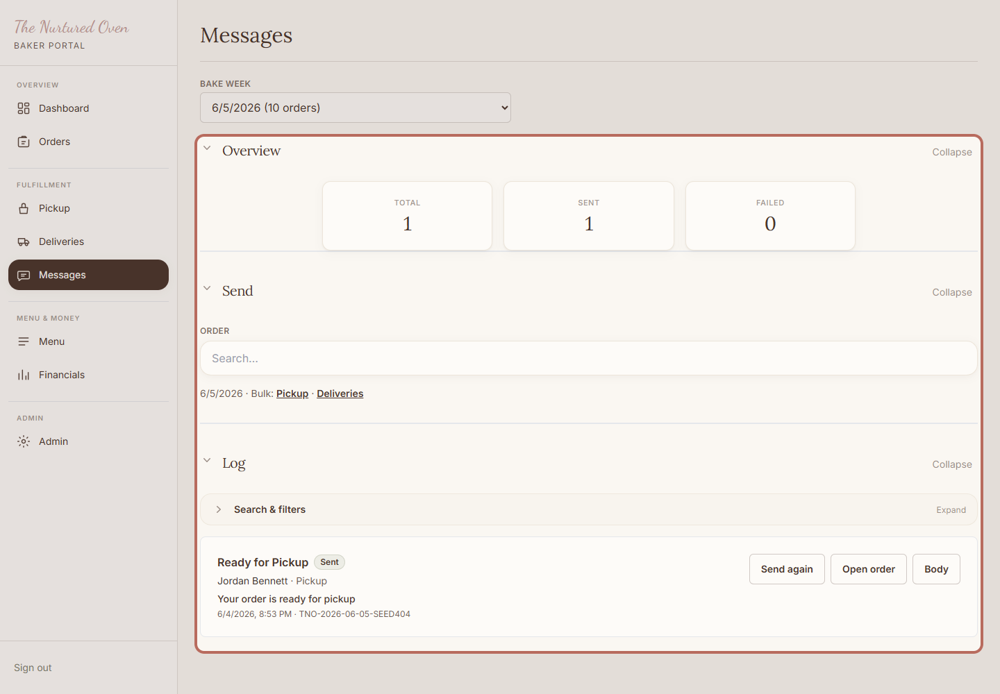
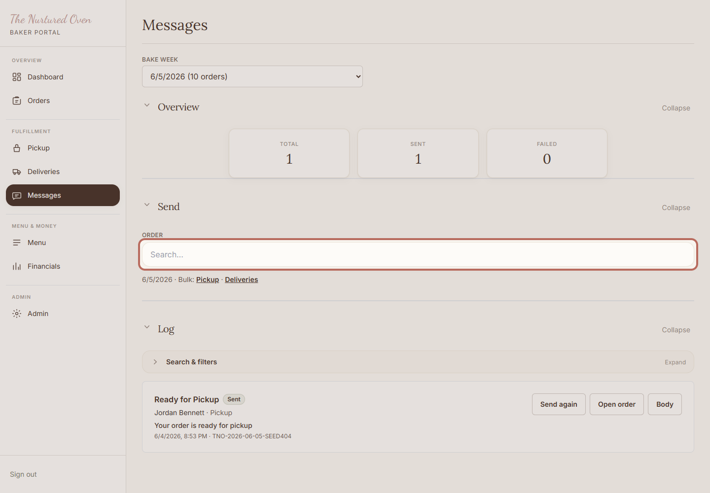
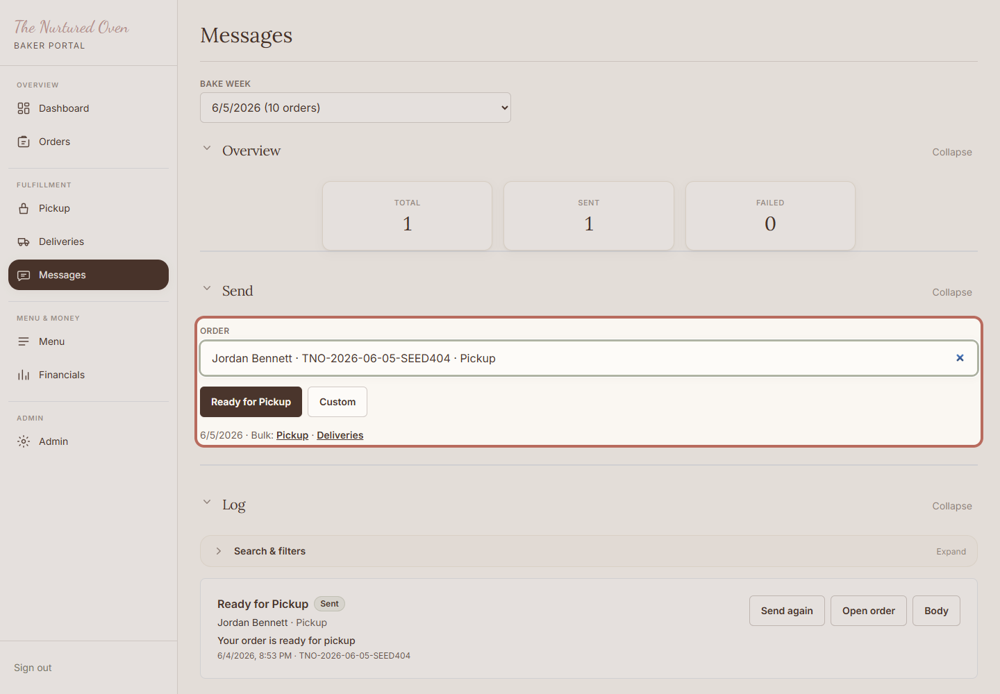
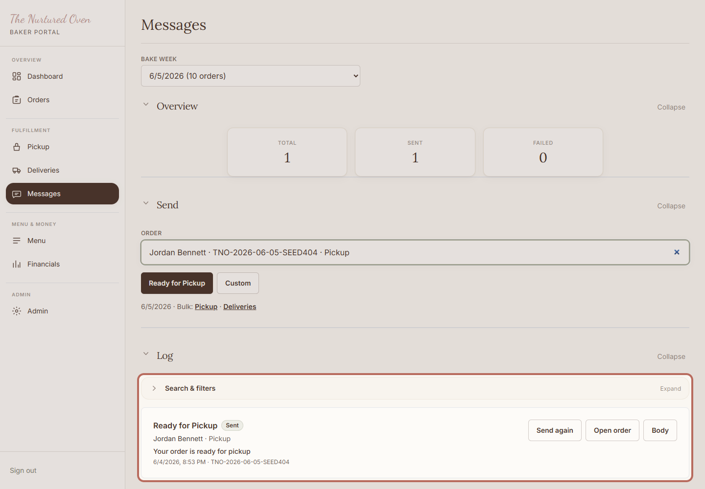

How to send customer updates
Use this to send short, helpful updates when an order is ready, out for delivery, or needs a personal note.
Steps
1. Open Messages

Open Messages in the admin area. This is where customer notes can be sent and reviewed.
Expected result: You can see the message overview, send area, and log.
2. Choose the order

Search for the customer or order, then choose the right one before writing or sending.
Expected result: The correct order is selected.
3. Choose the update type

Choose the update type that matches the situation.
The app will show a preview before you send. Keep any custom note short and kind.
Expected result: You can see the update choices for the selected order.
4. Check the message log

Check the log after sending so you know what has already gone out.
Expected result: You can see recent customer updates.
Success Check
- The right customer was selected.
- The message is short and clear.
- The log shows what was sent.